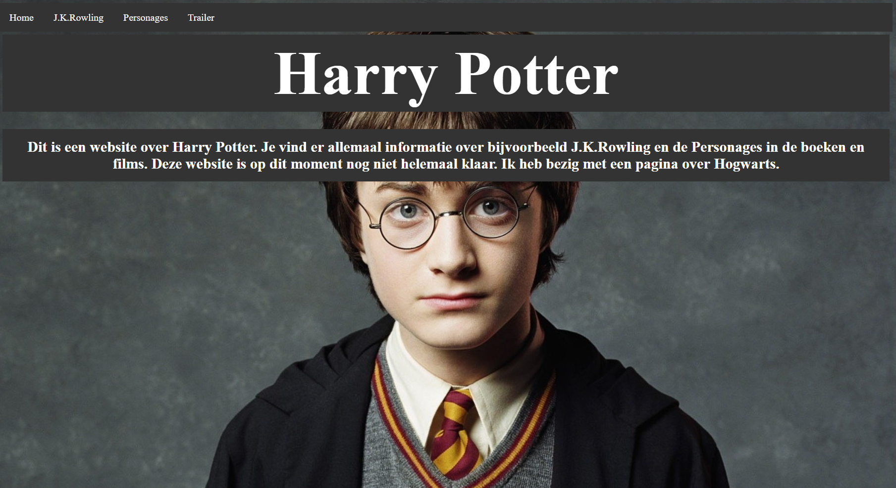

Dit was een video die ik vorig jaar heb gemaakt met blender. Ik was in een groepje van 4, met Dorien de Haan, Divya Bhulai en Hafsa M'rabet, en we moesten een
promotie filmpje maken voor war child. Zoals ik al zei is dit de ene die ik heb gemaakt.

Dit is een screenshot van de website die ik vorige jaar heb gemaakt. Over Harry Potter.